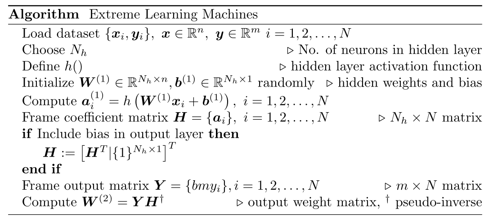
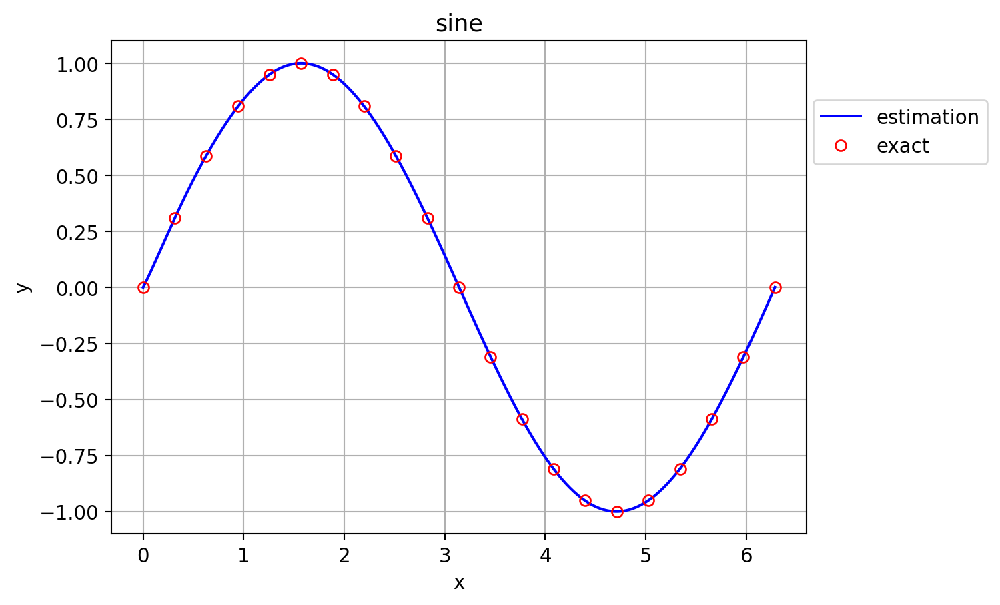
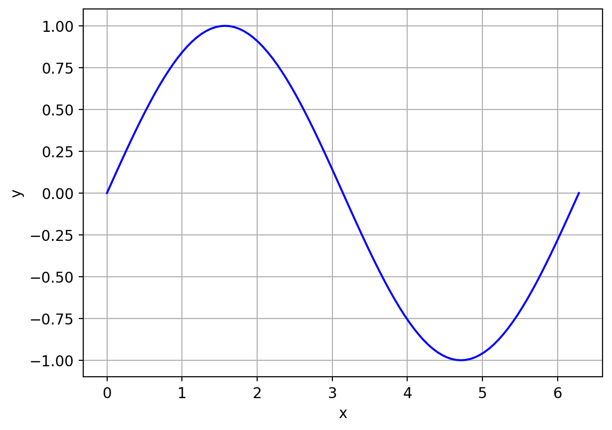
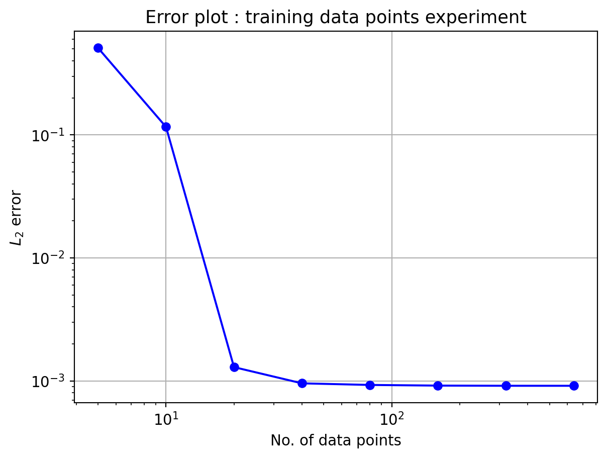
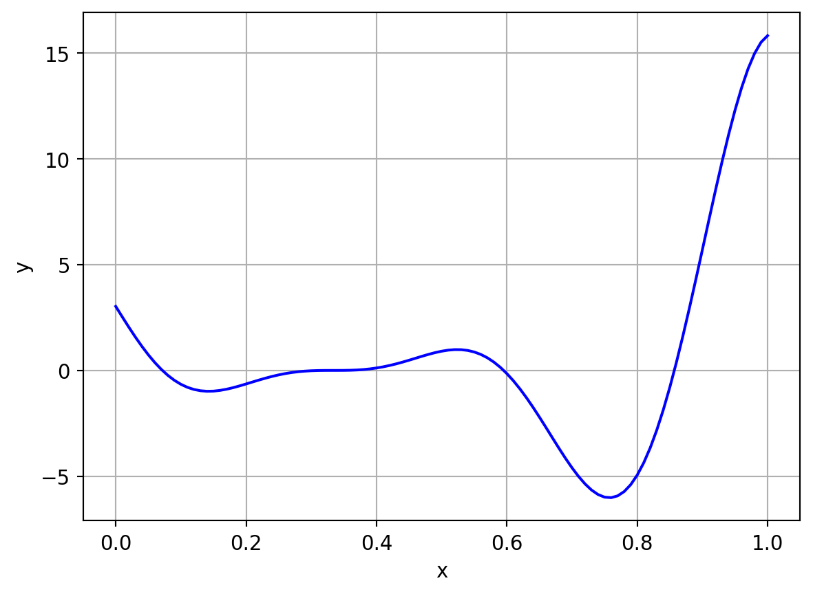
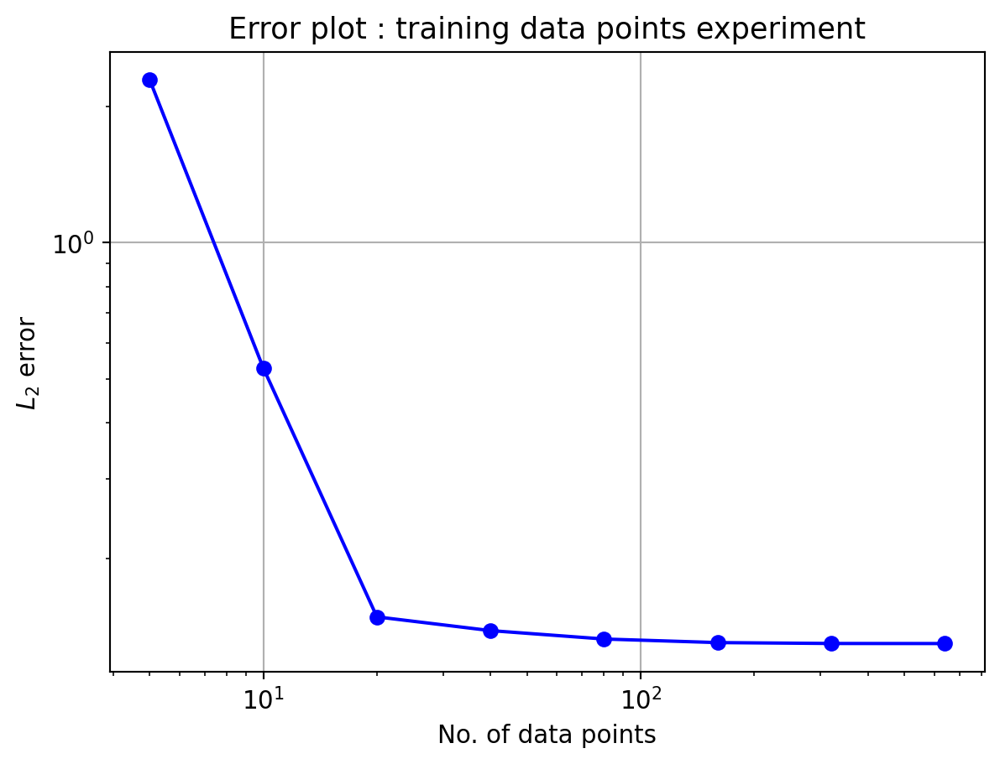

# importing needed modules
import numpy as np
import pandas as pd
#==============================================================================
class ExtremeLearningMachines:
def __init__(self,
inputData, # input data 2D array
outputData, # output data 2D array
N_h, # number of hidden neurons
outputBias = False, # include bias in output
name="elm"): # model name
self.modelName = name
self.Nh = N_h
self.randomSeed = None # seed value for pseudo-randomness
self.inputData = inputData
self.outputData = outputData
self.outputBias = outputBias
self.n = inputData.shape[1]
self.m = outputData.shape[1]
self.N = outputData.shape[0] # no. of data points
self.trainState = False # training state of the model
# initializing weight matrices
self.hiddenWeights = np.zeros([self.Nh,self.n])
self.hiddenBias = np.zeros([self.Nh,1])
self.outputWeights = np.zeros([self.m,self.Nh])
# hidden activation function
def h(self,x):
return np.tanh(x)
# summary function
def summary(self):
print("\n===Model Summary===\n")
print("Model name : ", self.modelName)
print("No of hidden neurons : ", self.Nh)
print("input size : ", self.n)
print("output size : ", self.m)
print("Train state : ", self.trainState)
print("Included output bias : ", self.trainState)
print("hidden weights : \n", self.hiddenWeights)
print("hidden bias : \n", self.hiddenBias)
print("output weights : \n", self.outputWeights)
# weights initialization function
def initializeWeights(self):
np.random.seed(self.randomSeed) # setting seed value
self.hiddenWeights = np.random.rand(self.Nh,self.n)
self.hiddenBias = np.random.rand(self.Nh,1)
self.outputWeights = np.random.rand(self.m,self.Nh)
# training function
def fit(self):
# initializing weights
self.initializeWeights()
# computing coefficient matrix
H = self.h(self.hiddenWeights@self.inputData[0][:,None]+
self.hiddenBias)
for i in range(1,self.N):
tmp = self.h(self.hiddenWeights@self.inputData[i][:,None]+
self.hiddenBias)
H = np.c_[H,tmp]
# if to include bias column in weights
if self.outputBias:
H = np.transpose(np.c_[H.T,np.ones([self.N,1])])
self.CoefficientMatrix = H
# computing output matrix
Y = self.outputData.T
# computing output layer weights
self.outputWeights = Y@np.linalg.pinv(H)
# predict function
def predict(self,x_pred): # x_pred has to be a row vector
y_pred = []
if self.outputBias:
for i in range(x_pred.shape[0]):
z = self.hiddenWeights@x_pred[i][:,None]+self.hiddenBias
a = self.h(z)
a = np.r_[a,np.ones([1,1])] # appending 1 for bias term
y_hat = self.outputWeights@a
y_pred.append(y_hat.flatten())
else:
for i in range(x_pred.shape[0]):
z = self.hiddenWeights@x_pred[i][:,None]+self.hiddenBias
a = self.h(z)
y_hat = self.outputWeights@a
y_pred.append(y_hat.flatten())
return np.array(y_pred)
#==============================================================================Extreme Learning Machines
1 Introduction
Extreme Learning Machines is a fast-training algorithm for the Single Layer Feedforward Networks (SLFNs) introduced by Huang, Zhu, and Siew (2006). The highlights from their published work are listed below.
SLFNs are generally trained using gradient-based iterative algorithms like Back Propagation that are generally slow due to improper learning steps and could easily converge to local minima.
In Extreme Learning Machines (ELMs) algorithm, the weight matrix \textbf{W}^{(1)}, and bias vector \textbf{b}^{(1)} of the hidden layer are randomly initialized and freezed. And, the output layer weight matrix \textbf{W}^{(2)} is determined using non-iterative methods like least squares.
Huang, Zhu, and Siew (2006) proved in their paper, that the values of hidden layer parameters, \textbf{W}^{(1)}, \textbf{b}^{(1)} can be randomly assigned and freezed if the hidden layer activation function h() is infinitely differentiable.
The output layer in their work has linear activation function.
The number of hidden layer neurons N_h, can be either less than or equal to the number of data points N i.e. N_h \le N, so that the approximation error norm can be less than or equal to a small positive value \epsilon. If N_h = N, then the equation system is determined and exact solution is possible. This sets the upper bound for number of neurons in hidden layer N_h.
The authors have proposed minimum norm least squares solution for the SLFNs. And the Singular Value Decomposition (SVD) can be generaly used to calculate the Moore-Penrose inverse[ref] in the least squares.
The learning time of ELM is mainly spent on calculating the Moore-Penrose generalized inverse. Hence, it is faster than the other iterative based algorithms.
The ELM in this work is designed to test under many settings and with different data in order to better comprehend the idea.
2 Mathematical background of ELMs
The overall idea was understood from the Huang, Zhu, and Siew (2006), and the equations are reproduced with own variables for convenience below.
Let,
n - input vector size
N_h - hidden neurons count
m - output vector size
N - Total number of data points
\textbf{x}_i - ith input vector
\textbf{y}_i - ith output vector
Then, the layer 1 (hidden layer) equations of SLFNs are
\begin{align*} \textbf{z}^{(1)}_i &= \textbf{W}^{(1)} \textbf{x}_i + \textbf{b}^{(1)}\\ \textbf{a}^{(1)}_i &= h(\textbf{z}^{(1)}_i) \end{align*}
Similarly, for layer 2 (output layer) the equations are
\begin{align*} \textbf{y}_i &= \textbf{W}^{(2)} \textbf{a}_i^{(1)} \end{align*}
Here, \textbf{y}_i is of size m\times 1. Now, concatinating all the \textbf{y} data i=1,2,\dots,N column-wise, will yield an m\times N matrix \textbf{Y} called as the output matrix, as given below.
\textbf{Y} = \{\textbf{y}_i\}, \ i=1,2,\dots,N
Similarly, the hidden layer outputs \textbf{a}^{(1)}_i for all data points are concatenated to form a N_h \times N matrix \textbf{H} called as the coefficient matrix (as here \textbf{W}^{(2)} is unknown to be determined).
\textbf{H} = \{\textbf{a}^{(1)}_i\}, \ i=1,2,\dots,N
As the values of \textbf{W}^{(1)} and \textbf{b}^{(1)} are randomly initialized as per ELM algorithm (hence known), the matrix \textbf{H} can be computed. The “augmented” form of output layer equation is \textbf{Y} = \textbf{W}^{(2)} \textbf{H}
Here, \textbf{W}^{(2)} is the unknown weights of output layer to be determined. As \textbf{H} is a non-square matrix in general (N_h \le N), the Moore-Penrose inverse of the matrix will be taken to solve for \textbf{W}^{(2)} as follows. \textbf{Y} \textbf{H}^\dagger = \textbf{W}^{(2)}
2.1 Including bias in the output layer
In the original work of Huang, Zhu, and Siew (2006), they did not include bias term in the output layer. However, inclusion of bias term is straight-forward. For example, first equation in layer 1 can be writen as
\begin{align*} \textbf{z}^{(1)}_i &= \textbf{W}^{(1)} \textbf{x}_i + \textbf{b}^{(1)}\\ &= [\textbf{W}^{(1)}|\textbf{b}^{(1)}] [\textbf{x}_i^T | 1]^T \\ &= \bar{\textbf{W}}^{(1)} [\textbf{x}_i^T | 1]^T \end{align*}
In similar way, the bias term can be included in output layer as follows. \begin{align*} \textbf{Y} &= \textbf{W}^{(2)} \textbf{H} \\ &= \bar{\textbf{W}}^{(2)} [\textbf{H}^T|1]^T \end{align*}
However, inclusion of bias in output layer is given as optional in the developed Python program.
2.2 ELM algorithm
As a summary of above steps, the algorithm of Extreme Learning Machines with option to include bias in the output layer is given below.

3 Python implementation of ELMs
The above algorithm was implemented for the development of Extreme Learning Machines (ELMs) using Python programming language.
For the convenience of trials, a custom Python Class named ExtremeLearningMachines was developed that embeds the algorithm and supported functions. The class definition is given below.
The hidden activation function is chosen to be hyperbolic tan for now, and can be modified in the class definition as per need.
As a sample application, the following function is attempted to be approximated using the above ExtremeLearningMachines. y = \sin(x), \ x \in [0,2\pi]
The python code that does this implementation is as follows.
import matplotlib.pyplot as plt
ELM = ExtremeLearningMachines
x = np.linspace(0,2*np.pi,21)[:,None]
y = np.sin(x)
# defining ELM model
elm1 = ELM(x, # input data
y, # output data
N_h=10, # hidden neurons count
outputBias=False,
name="sine_model")
# setting random seed
elm1.randomSeed = 1
# fitting the model
elm1.fit()
# printing model summary
elm1.summary()
# predicting the output with more data points than training
x_test = np.linspace(0,2*np.pi,501)[:,None]
y_pred = elm1.predict(x_test)
# plotting the output
plt.rcParams.update({"font.size":11})
plt.figure()
plt.plot(x_test,y_pred,'-b',label="estimation")
plt.plot(x,y,'or',markerfacecolor="none",label="exact")
plt.grid()
plt.xlabel("x")
plt.ylabel("y")
plt.title("sine")
plt.legend(loc=(1.01,0.75))
plt.show()
===Model Summary===
Model name : sine_model
No of hidden neurons : 10
input size : 1
output size : 1
Train state : False
Included output bias : False
hidden weights :
[[4.17022005e-01]
[7.20324493e-01]
[1.14374817e-04]
[3.02332573e-01]
[1.46755891e-01]
[9.23385948e-02]
[1.86260211e-01]
[3.45560727e-01]
[3.96767474e-01]
[5.38816734e-01]]
hidden bias :
[[0.41919451]
[0.6852195 ]
[0.20445225]
[0.87811744]
[0.02738759]
[0.67046751]
[0.4173048 ]
[0.55868983]
[0.14038694]
[0.19810149]]
output weights :
[[-18103.89605109 1484.74157149 -17937.81828215 22083.11744364
3890.69594943 -3827.5775293 -7921.85536559 -3855.67365906
6670.70534352 3135.22679475]]
4 Experiments with ELM
Numerical experiments were performed to get the idea on capabilities of ELMs. Following two functions were taken for the experiments.
Sine function : y = sin(x), \ x \in [0,2\pi]
Plateu function: y = (6x-2)^2 \sin(12 x-4), \ x \in [0,1]
Following experiment(s) were performed with each function.
Accuracy variation with number of data points
Accuracy variation with number of hidden neurons
4.1 Sine function
The equation of function is given below
y = \sin(x), \ x \in [0,2\pi]

Exp 1: Accuracy variation with number of data points
In this experiment, the number of training data points will be varied while keeping the testing data points to be N_t = 501. The training data points were uniformly distributed. Following code performs the experiment and output the L_2 error vs traing data points as a table and a plot.
Note
Here, the number of neurons in hidden layer is kept constant, N_h=10
from IPython.display import HTML
# fixing test points
x_test = np.linspace(0,2*np.pi,501)[:,None]
y_test = np.sin(x_test)
# fixing number of datapoints
N = [5,10,20,40,80,160,320,640]
# performing experiment on loop
L2_error = []
for n in N:
# generating data
x = np.linspace(0,2*np.pi,n)[:,None]
y = np.sin(x)
# defining ELM model
elm1 = ELM(x,y,N_h=10,outputBias=False,name="sine_model")
# setting random seed
elm1.randomSeed = 1
# fitting the model
elm1.fit()
# predicting the output with more data points than training
y_pred = elm1.predict(x_test)
# computing error
l2 = np.sqrt(np.mean(np.square(y_pred-y_test)))
L2_error.append(l2)
# preparing dataframe
fid = pd.DataFrame(np.transpose([N,L2_error]),
columns=["No. of datapoints","L2 error"])
from itables import show
show(fid, columnDefs=[{"className": "dt-center", "targets": "_all"}])
# plotting graph
plt.figure()
plt.plot(N,L2_error,'-ob')
plt.grid()
plt.xlabel("No. of data points")
plt.ylabel(r"$L_2$ error")
plt.yscale("log")
plt.xscale("log")
plt.title("Error plot : training data points experiment")
plt.show()| No. of datapoints | L2 error |
|---|---|
| Loading ITables v2.3.0 from the internet... (need help?) |

In the above plot, the L_2 error almost settles in the order of 10^{-3} from 40 data points onwards. This limiation could be due to the number of hidden neurons. Hence, the next experiment will be performed with varying hidden neuron counts.
4.2 Plateau function
The equation of function is given below
y = (6x-2)^2 \sin(12x -4), x \in [0,1]

Same set of experiments were performed for this function as well. It is just a repetition with a different, complicated function.
Exp 1: Accuracy variation with number of data points
In this experiment, the number of training data points will be varied while keeping the testing data points to be N_t = 501. The training data points were uniformly distributed. Following code performs the experiment and output the L_2 error vs traing data points as a table and a plot.
Note
Here, the number of neurons in hidden layer is kept constant, N_h=10
from IPython.display import HTML
# fixing test points
x_test = np.linspace(0,1,501)[:,None]
y_test = (6*x_test-2)**2*np.sin(12*x_test-4)
# fixing number of datapoints
N = [5,10,20,40,80,160,320,640]
# performing experiment on loop
L2_error = []
for n in N:
# generating data
x = np.linspace(0,1,n)[:,None]
y = (6*x-2)**2*np.sin(12*x-4)
# defining ELM model
elm1 = ELM(x,y,N_h=10,outputBias=False,name="sine_model")
# setting random seed
elm1.randomSeed = 1
# fitting the model
elm1.fit()
# predicting the output with more data points than training
y_pred = elm1.predict(x_test)
# computing error
l2 = np.sqrt(np.mean(np.square(y_pred-y_test)))
L2_error.append(l2)
# preparing dataframe
fid = pd.DataFrame(np.transpose([N,L2_error]),
columns=["No. of datapoints","L2 error"])
from itables import show
show(fid, columnDefs=[{"className": "dt-center", "targets": "_all"}])
# plotting graph
plt.figure()
plt.plot(N,L2_error,'-ob')
plt.grid()
plt.xlabel("No. of data points")
plt.ylabel(r"$L_2$ error")
plt.yscale("log")
plt.xscale("log")
plt.title("Error plot : training data points experiment")
plt.show()| No. of datapoints | L2 error |
|---|---|
| Loading ITables v2.3.0 from the internet... (need help?) |

In the above plot, the L_2 error almost settles in the order of 10^{-1} from 40 data points onwards. The next experiment will be performed with varying hidden neuron counts.
5 Conclusion
In this work, a study on ELMs was made and a set of numerical experiments were performed. Following are the concluding points.
ELMs are fast and work quite well with 1D functions
Accuracy of the model depends on number of data points and number of hidden neurons, probably on the random initialization of hidden weights and biases as well.
Number of hidden neurons should be less than or equal to number of data points. Otherwise also, the algorithm will work, but yield bad results. For good approximation, N_h \le N. This can be observed in all 4 numerical experiments performed, specially experiments with varying hidden neuron counts.
Further experiments can be performed with ELMs using the ExtremeLearningMachine class developed in Python.
References
Huang, Guang-Bin, Qin-Yu Zhu, and Chee-Kheong Siew. 2006. “Extreme Learning Machine: Theory and Applications.” Neurocomputing 70 (1-3): 489–501.